Modul pelajaran pengenalan kanji yang berasal dari gambar alam dan struktur tubuh manusia.
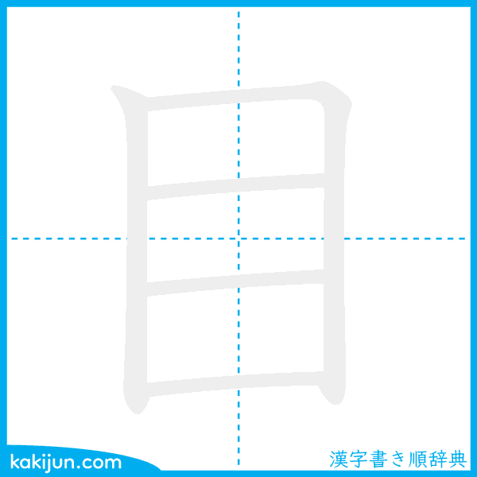
Meaning: Mata (Eye)
Onyomi: モク (moku) / ボク (boku)
Kunyomi: め (me) / ま (ma)
Jumlah Coretan: 5
Bushu: 目
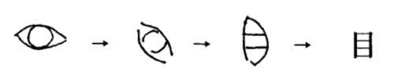
Kanji ini berasal dari gambar sebuah mata yang dilihat dari depan. Bentuk persegi pada karakter ini merupakan penyederhanaan dari bentuk mata manusia pada zaman dahulu.
私の目は大きいです。
(Watashi no me wa ookii desu.)
Mata saya besar.
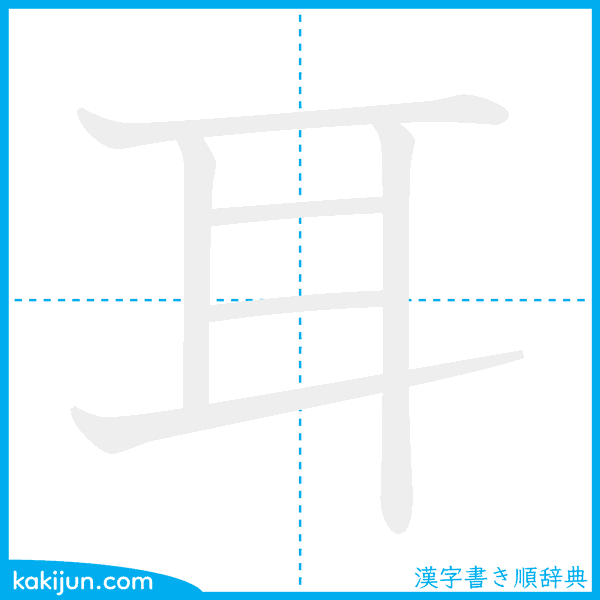
Meaning: Telinga (Ear)
Onyomi: ジ (ji)
Kunyomi: みみ (mimi)
Jumlah Coretan: 6
Bushu: 耳
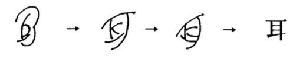
Kanji ini berasal dari bentuk telinga manusia yang digambar secara sederhana. Bentuknya masih mempertahankan siluet telinga asli.
犬の耳は大きいです。
(Inu no mimi wa ookii desu.)
Telinga anjing besar.
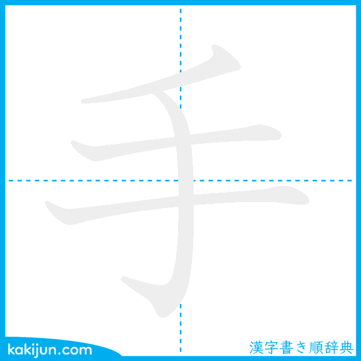
Meaning: Tangan (Hand)
Onyomi: シュ (shu) / ズ (zu)
Kunyomi: て (te) / た (ta)
Jumlah Coretan: 4
Bushu: 手
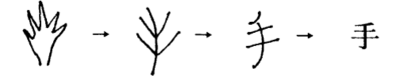
Kanji ini berasal dari gambar tangan manusia dengan jari-jari yang terbuka.
山田さんは日本語が上手です。
(Yamada-san wa nihongo ga jouzu desu.)
Yamada pandai bahasa Jepang.
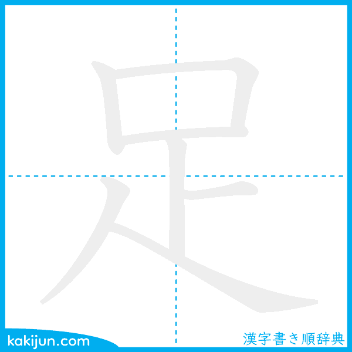
Meaning: Kaki / Memadai (Foot/Leg/Sufficient)
Onyomi: ソク (soku)
Kunyomi: あし (ashi) / た.りる (ta.riru)
Jumlah Coretan: 7
Bushu: 足
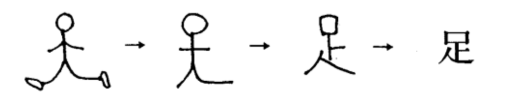
Kanji ini berasal dari gambar kaki manusia yang sedang berjalan.
お金が足りません。
(Okane ga tarimasen.)
Uangnya tidak cukup.
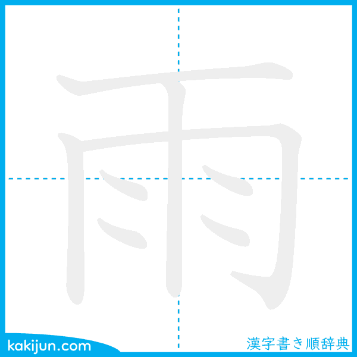
Meaning: Hujan (Rain)
Onyomi: ウ (u)
Kunyomi: あめ (ame) / あま (ama)
Jumlah Coretan: 8
Bushu: 雨
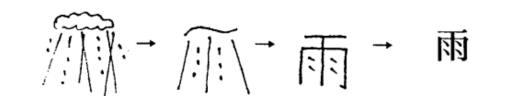
Kanji ini berasal dari gambar awan yang menurunkan tetesan hujan.
今日は雨です。
(Kyou wa ame desu.)
Hari ini hujan.
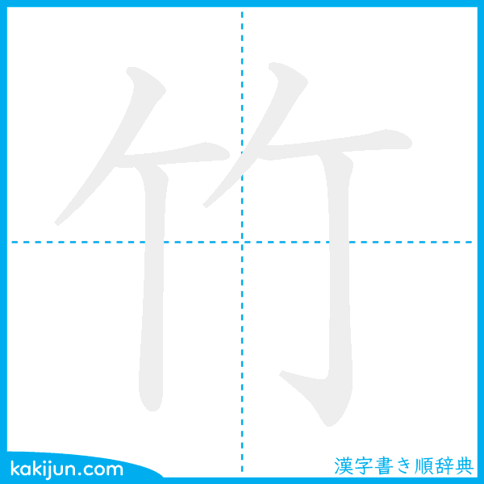
Meaning: Bambu (Bamboo)
Onyomi: チク (chiku)
Kunyomi: たけ (take)
Jumlah Coretan: 6
Bushu: 竹
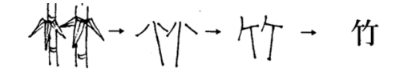
Kanji ini berasal dari gambar batang bambu yang menjulang ke atas.
竹の子が好きです。
(Takenoko ga suki desu.)
Saya suka rebung.
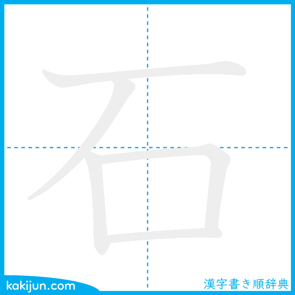
Meaning: Batu (Stone)
Onyomi: セキ (seki) / シャク (shaku)
Kunyomi: いし (ishi)
Jumlah Coretan: 5
Bushu: 石
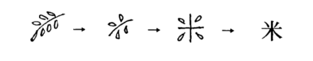
Kanji ini berasal dari gambar batu yang berada di bawah tebing.
博物館で化石を見ました。
(Hakubutsukan de kaseki o mimashita.)
Saya melihat fosil di museum.
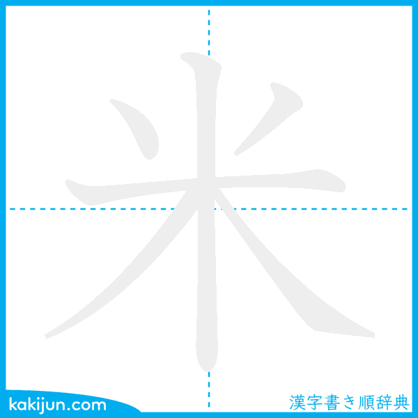
Meaning: Beras (Rice)
Onyomi: ベイ (bei) / マイ (mai)
Kunyomi: こめ (kome)
Jumlah Coretan: 6
Bushu: 米
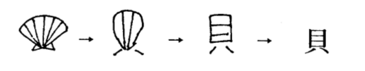
Kanji ini berasal dari gambar butiran padi atau beras.
米を買います。
(Kome o kaimasu.)
Saya membeli beras.
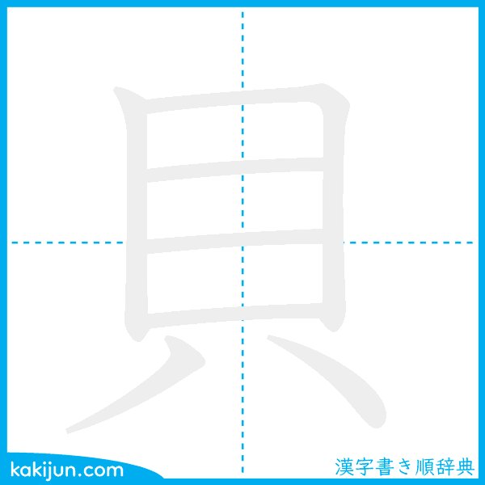
Meaning: Kerang (Shell)
Onyomi: バイ (bai)
Kunyomi: かい (kai)
Jumlah Coretan: 7
Bushu: 貝
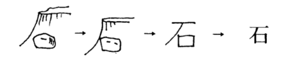
Kanji ini berasal dari gambar kerang yang dahulu digunakan sebagai alat tukar.
海で貝を拾いました。
(Umi de kai o hiroimashita.)
Saya memungut kerang di pantai.
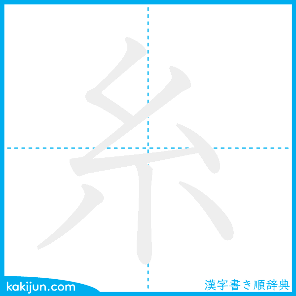
Meaning: Benang (Thread)
Onyomi: シ (shi)
Kunyomi: いと (ito)
Jumlah Coretan: 6
Bushu: 糸
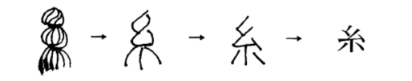
Kanji ini berasal dari gambar gulungan benang yang saling terpilin.
母は毛糸でセーターを作ります。
(Haha wa keito de seetaa o tsukurimasu.)
Ibu membuat sweater dari benang wol.
Silakan isi tabel ringkasan berikut untuk membantumu menghafal.
| Kanji | Cara Baca | Arti Kata |
|---|---|---|